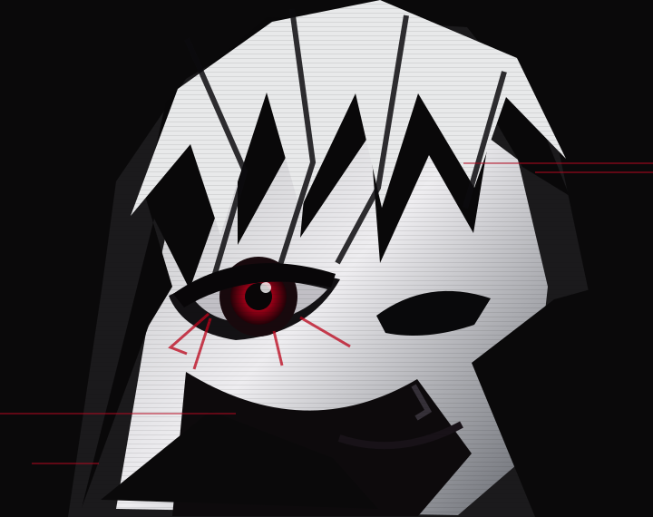

東京喰種BLACK REAPER // 0X0KRR 0x0krronly youse você chegou até aqui, é porque eu te achei daora. ME SEGUE NO INSTA 0x0krr ✱ 2026
 BLACK REAPER // 0X0KRRBLACK REAPER // 0X0KRR
BLACK REAPER // 0X0KRRBLACK REAPER // 0X0KRR